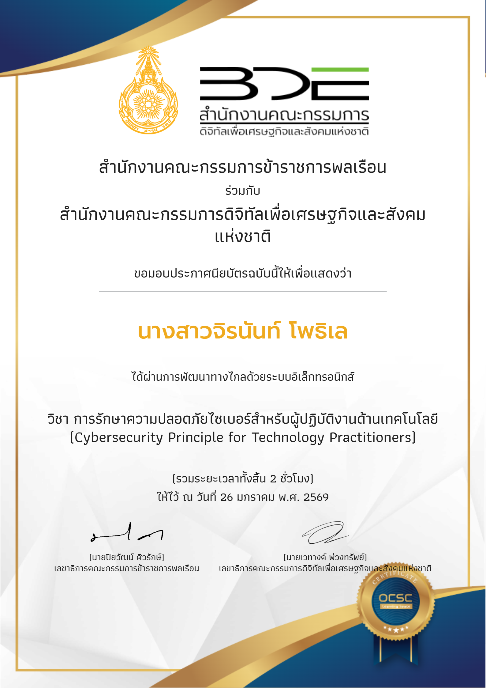
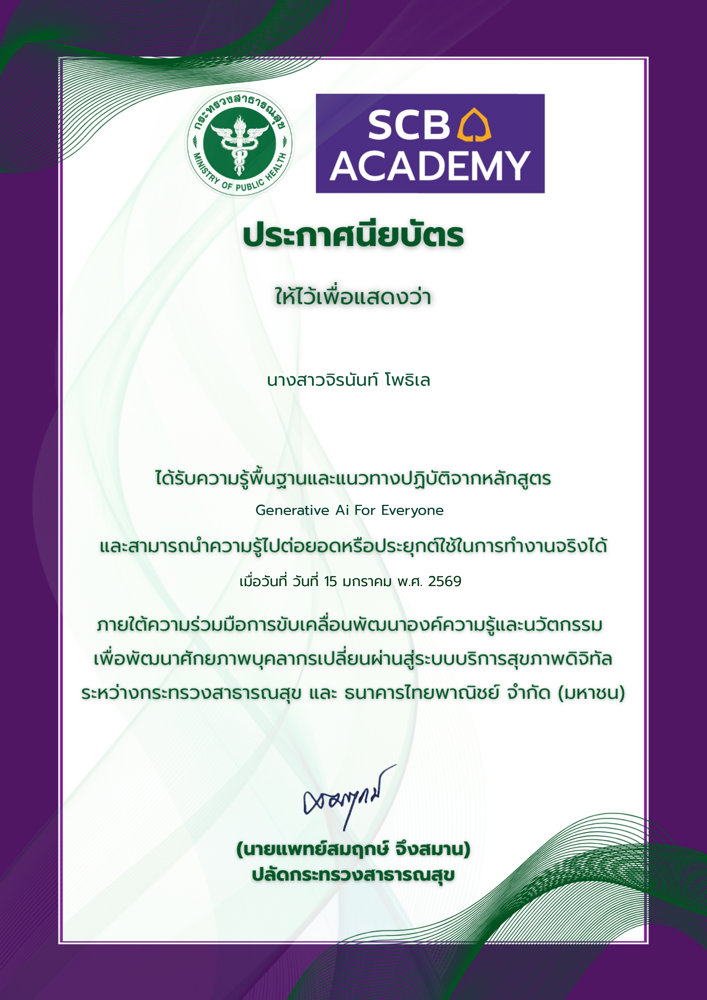
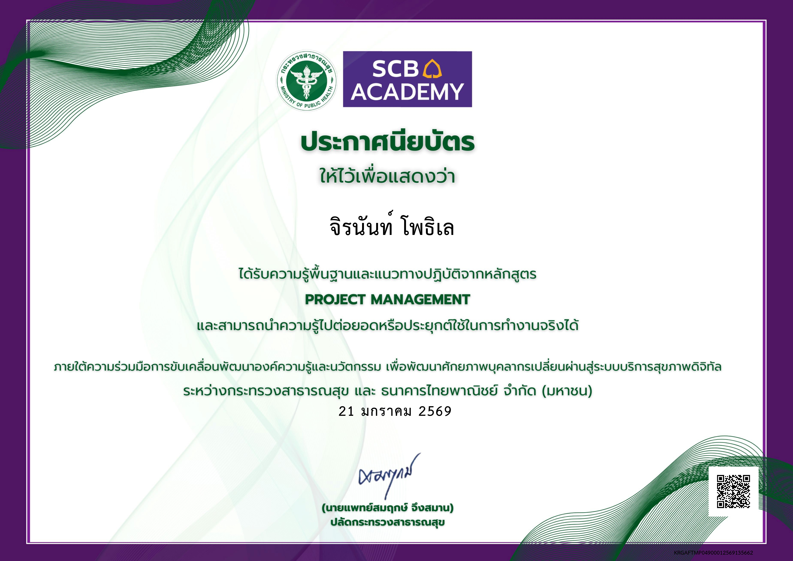

นักวิชาการคอมพิวเตอร์ | IT & Data (SQL) | Hospital Information Systems
📞 083-8639296 | 📧 jp.japeck@gmail.com
📍 925/6 ม.3 ถ.เจนจบทิศ ต.ในเมือง อ.บ้านไผ่ จ.ขอนแก่น 40110
นักวิชาการคอมพิวเตอร์ที่มีประสบการณ์ด้านการจัดการข้อมูลและระบบสารสนเทศของหน่วยงาน สามารถเขียน SQL เพื่อวิเคราะห์และจัดทำรายงานตามตัวชี้วัด พร้อมดูแลระบบงานด้านสาธารณสุข มีความเข้าใจในงานราชการและกระบวนการจัดซื้อจัดจ้าง รวมถึงมีทักษะในการประสานงานและสนับสนุนงานไอทีให้ดำเนินได้อย่างมีประสิทธิภาพ
ตำแหน่ง : นักวิชาการคอมพิวเตอร์
มหาวิทยาลัยมหาสารคาม (2563 - 2567)
ปริญญาตรี วิทยาศาสตร์บัณฑิต สาขาเทคโนโลยีสารสนเทศ
โรงเรียนบ้านไผ่ 2560 - 2563
มัธยมศึกษาตอนปลาย แผนการเรียน จีน - อังกฤษ


